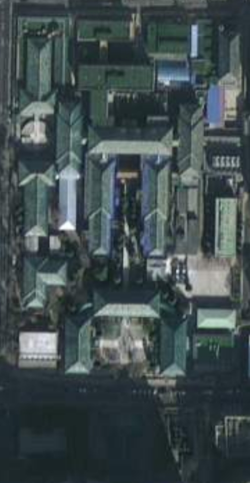
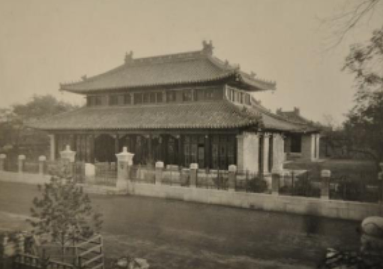

A CENTURY OF MEMORY
老楼 · 建筑群
走进百年空间，在一砖一瓦间读懂协和。
01点击地图上的楼号
探索一处建筑记忆
探索一处建筑记忆

可探索地点
A–P 楼点位参照总平面图
CAMPUS IN TRANSITION
从医学堂旧址到百年院区
建筑史研究记录了协和医学堂早期建筑以及后来院区的扩建。以下历史影像由网站提供，未随文件附原始摄影、档案出处或授权信息；楼名与年代说明参照文献，图片本身不作独立史料证明。





楼名与沿革参照：李美慧，《北京协和医院各历史阶段建筑设计研究》，北京建筑大学，2020。完整书目信息见资料与图片来源。